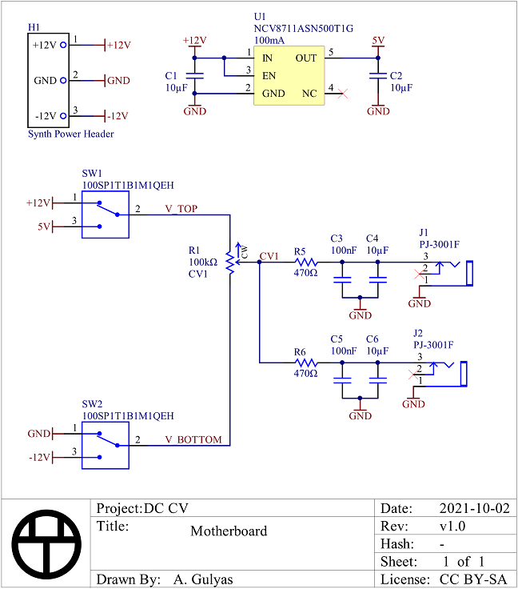
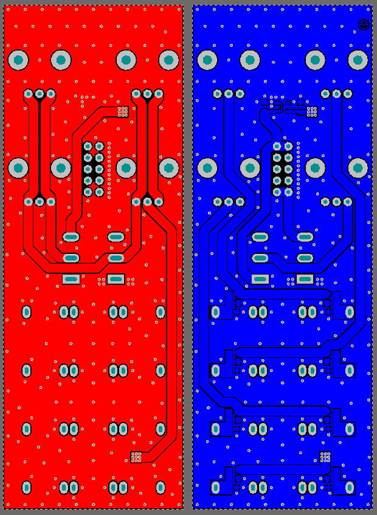
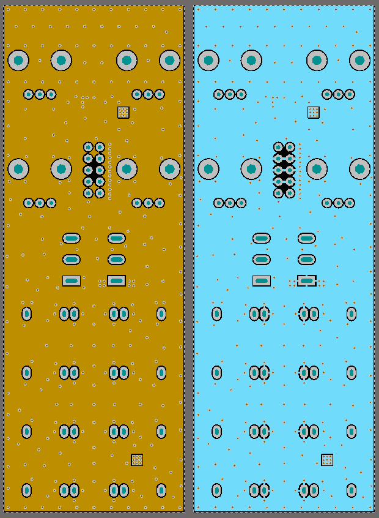
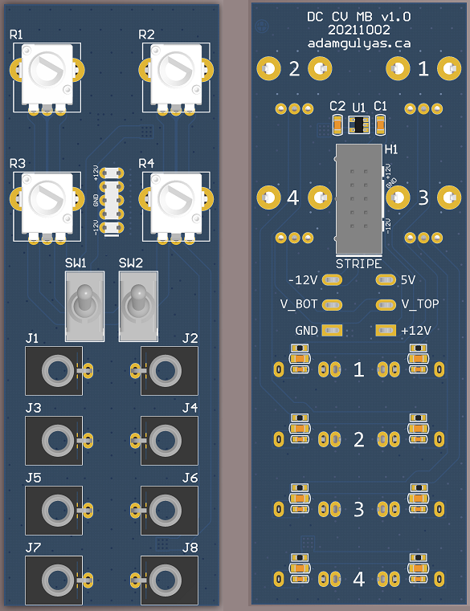
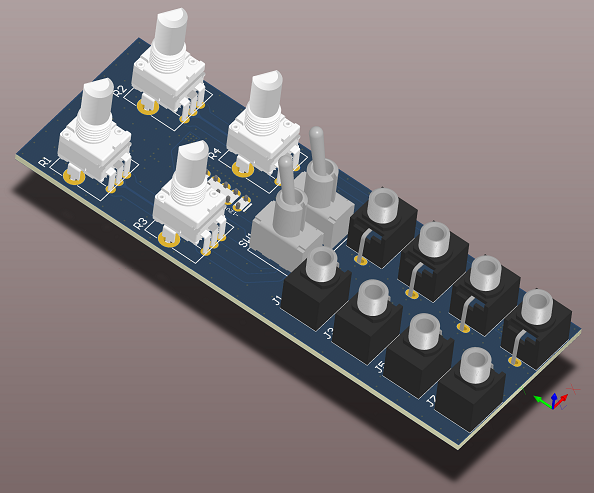
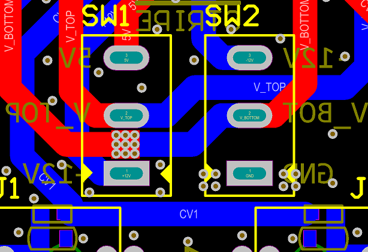
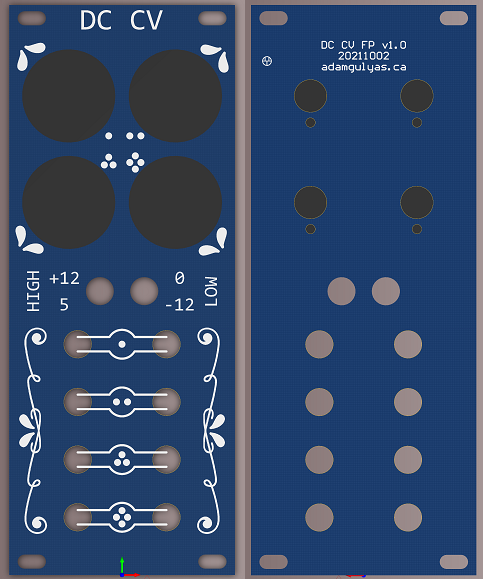
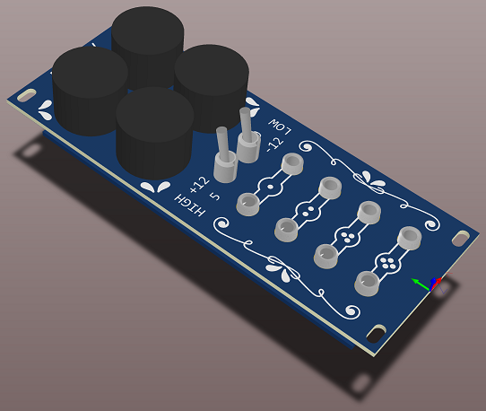
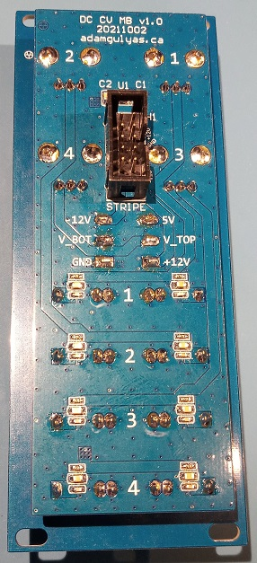

DC CV
When testing Eurorack modules I often need a few controllable DC voltage sources. I had been using
pots connected with alligator cables, but they were a bit chaotic and annoying to work with.
This module provides 4 separately controllable voltages, each with two parallel outputs. The upper and lower
voltage limits are selected with two toggle switches.
Schematic
I only showed one pot to simplify the schematic. The full schematic can be found here.
The outputs are current limited with 470Ω resistors (25 mA @ 12V) which also form part of an RC filter.
Adjusting the capacitance value lets you choose how much noise immunity/slew you want when turning the pot.
Synth inputs are usually almost directly into an op-amp with a high input impedance or a relatively high
impedance voltage divider, so the current draw shouldn't ever get high enough to either change the output
voltage or draw too much current from the power rails.
Information about Eurorack power connectors can be found here.
There is a case where the output high rail is set to 5V and all the outputs are pulled down to -12 V simultaneously
with the pots turned all the way up. In that case the total current draw from the 5V regulator would be 289 mA.
(17V across eight 470Ω resistors) However, the regulator is only rated to 100 mA. Instead of choosing a regulator
that had three times the output current, I just made sure it had over current protection.
I chose a linear regulator instead of a buck because under normal use there shouldn't be enough current drawn
for the inefficiency to matter and I didn't want to deal with switching noise or including an inductor.
I didn't make any effort to disable the 5V regulator when it wasn't used, but its quiescent current is only 2.5µA
which is too small to care about for a synthesizer system that draws hundreds or thousands of mA.
BOM
| Description | Manufacturer | Part Number | Digi-Key Part Number | Quantity | Price/unit (CAD) |
|---|---|---|---|---|---|
| CAP CER 10UF 16V X5R 0805 | Yageo | CC0805MKX5R7BB106 | 311-3430-1-ND | 10 | 0.2438 |
| CAP CER 0.1UF 16V X7R 0603 | Yageo | CC0603KRX7R7BB104 | 311-1088-1-ND | 8 | 0.0374 |
| CONN HEADER VERT 10POS 2.54MM | 3M | 30310-6002HB | 30310-6002HB-ND | 1 | 0.9120 |
| 3.5MM MONO PHONE JACK WITH SWITCH | Tayda Electronics | PJ-3001F | (direct from Tayda) | 8 | 0.23 |
| POT 100K OHM 1/20W PLASTIC LIN | TT Electronics | P0915N-FC15BR100K | 987-1709-ND | 4 | 1.8170 |
| RES SMD 470 OHM 5% 1/10W 0603 | Yageo | RC0603JR-07470RL | 311-470GRCT-ND | 8 | 0.0290 |
| SWITCH TOGGLE SPDT 5A 120V | E-Switch | 100SP1T1B1M1QEH | EG2350-ND | 2 | 3.1930 |
| IC REG LINEAR 5V 100MA 5TSOP | onsemi | NCV8711ASN500T1G | 488-NCV8711ASN500T1GCT-ND | 1 | 0.9230 |
PCB
Motherboard
   
Usually I use three PCBs:
- Face plate
- UI board with expensive user interface hardware like pots and switches
- Motherboard with electronics
Because I wanted all the UI elements in specific places, I couldn't rearrange them to optimize routing. I started with two layers, but the connections required by the UI layout resulted in a pretty weak/circuitous ground connection from the power header to the jacks. Since this is a personal project where I don't have to pinch pennies like in the consumer electronics industry, I just went to 4 layers.
Looking at it now, I could have done something like the picture below and had a good ground connection with just two layers. I think I was obsessing too much over not changing layers.
 The grounded through hole pads are connected to only one of the ground planes to help with soldering.
I almost certainly used too many vias but they didn't increase the price from JLCPCB, so I let it go.
The switch pads double as test points for the different voltage rails.
Faceplate
 
Art from
Vecteezy.com
then modified, used under their Free License.
Since this is a Eurorack module, the face plate is 3U (128.5 mm) tall
and 10HP (2" or 50.8mm) wide.
Assembly
There were no issues during assembly.
Testing
The functionality is pretty simple so testing was easy. I got the connections for the pots and switches right,
so turning the pots clockwise increases the output voltage and the switch position matches the faceplate labels.
I also got the polarity of the power header right so I didn't immediately burn the regulator.
With 10µF on the outputs the slew rate is noticeable but not slow. I think if would sound cool if fed into a VCO.
Improvements
- The pots are almost too close together for my thumb to fit between the knobs. You definitely have to use your fingertips to turn them. I should make the face plate wider and squish the jacks down so I can move the pots apart.
- The switches are almost too close together for the nuts to coexist. You couldn't use a socket to tighten them. They should be spaced further apart.
- It might be more useful to only have half the inputs and make the module half as wide.
- If there was only one output per pot it would space everything out more.
- I could adjust the output caps so each pot has one fast and one slow slew output.
Overall I'm pretty happy with how this one turned out.
Back to Projects.